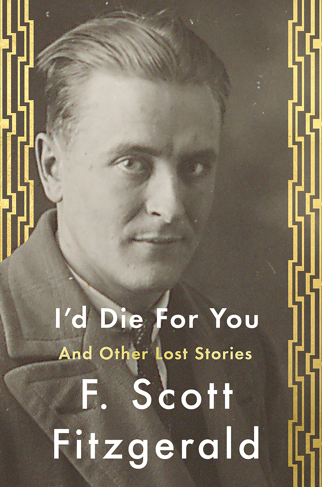
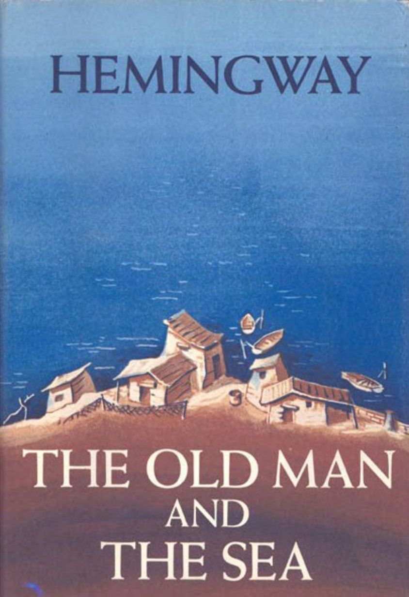
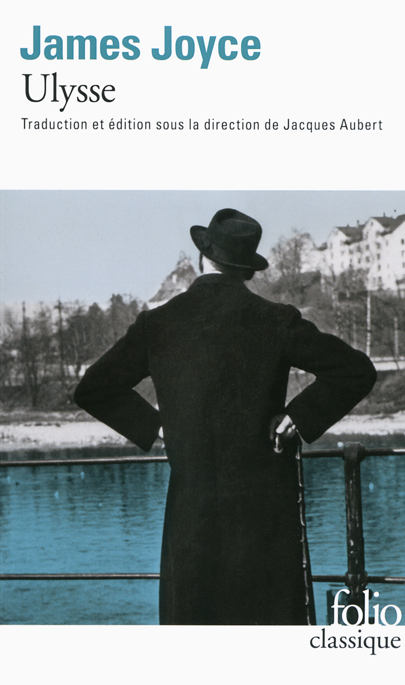

"I was born in Casablanca, came in UK for my studies, I wish in this page, share with you some of my favourite books"
|  |
I'd Die for youId Die For You is a collection of the last remaining unpublished and uncollected short stories by F. Scott Fitzgerald, edited by Anne Margaret Daniel. Fitzgerald did not design the stories in Id Die For You as a collection. Most were submitted individually to major magazines during the 1930s and accepted for publication during Fitzgerald lifetime, but were never printed. Some were written as movie scenarios and sent to studios or producers, but not filmed. Others are stories that could not be sold because their subject matter or style departed from what editors expected of Fitzgerald. They date from the earliest days of Fitzgerald career to the last. They come from various sources, from libraries to private collections, including those of Fitzgeralds family. |
|  |
The Old Man AND The SeaThe Old Man and the Sea tells the story of a battle between an aging, experienced fisherman, Santiago, and a large marlin. The story opens with Santiago having gone 84 days without catching a fish, and now being seen as "salao", the worst form of unluckiness. He is so unlucky that his young apprentice, Manolin, has been forbidden by his parents to sail with him and has been told instead to fish with successful fishermen. The boy visits Santiago's shack each night, hauling his fishing gear, preparing food, talking about American baseball and his favorite player, Joe DiMaggio. Santiago tells Manolin that on the next day, he will venture far out into the Gulf Stream, north of Cuba in the Straits of Florida to fish, confident that his unlucky streak is near its end. |
|  |
UlysseUlysses is a modernist novel by Irish writer James Joyce. It was first serialised in parts in the American journal The Little Review from March 1918 to December 1920 and then published in its entirety in Paris by Sylvia Beach on 2 February 1922, Joyce's 40th birthday. It is considered to be one of the most important works of modernist literature and has been called "a demonstration and summation of the entire movement". According to Declan Kiberd, "Before Joyce, no writer of fiction had so foregrounded the process of thinking" |